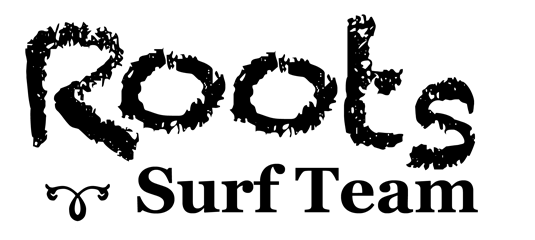

The Roots Surf Team is a group of menehune wahines surfing on the coast
of South Carolina in the Charleston area. The team was started to
encourage participation in the ESA contests by young girls and bring together the menehune wahine surf community.
If interested in being a part of the team, please contact kriswindham at gmail dot com or pursell75 at yahoo dot com. We are trying to get together some beach clean ups and mock heats to practice for the ESA contests for the upcoming 2012 surf season.